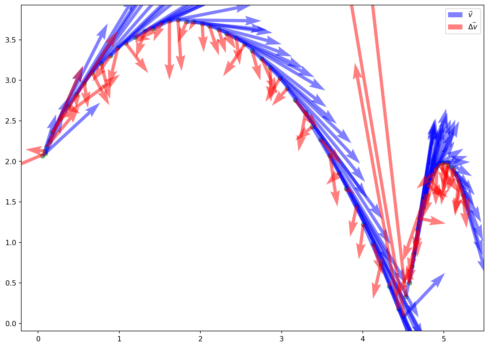
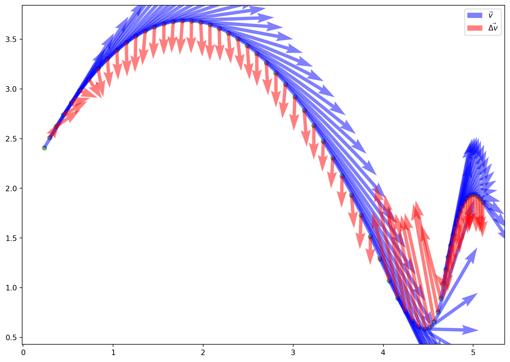
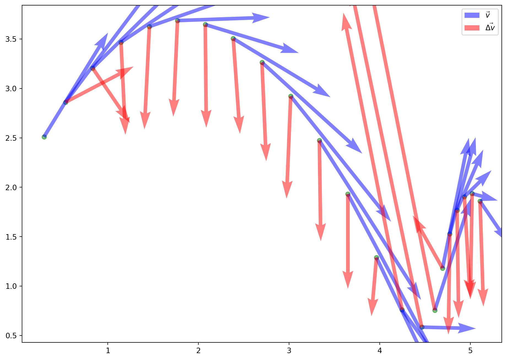
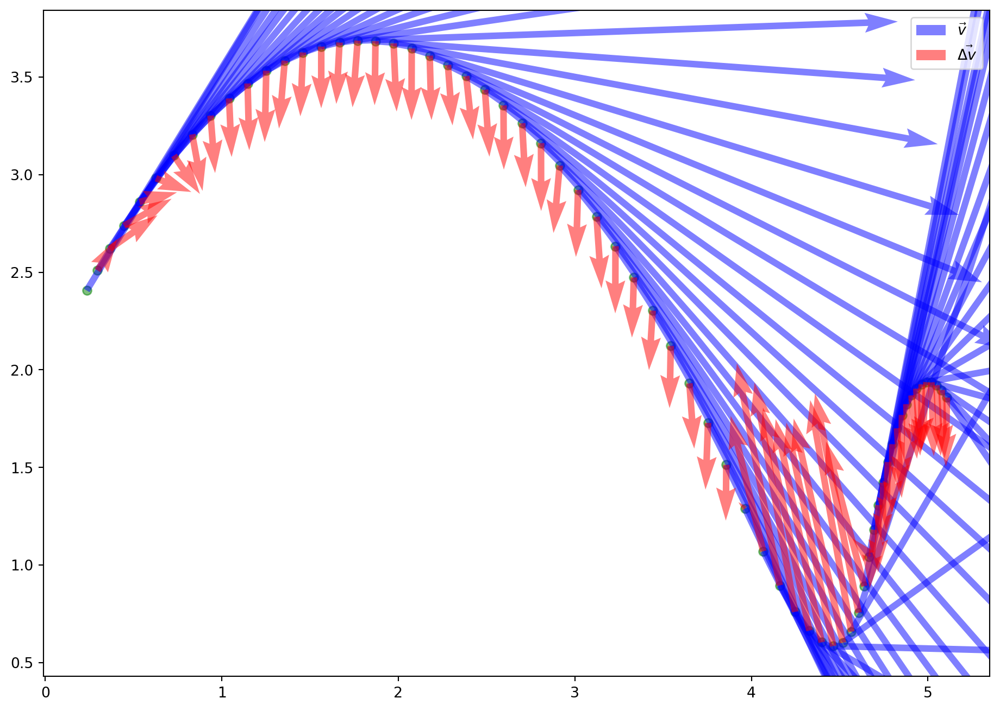

%matplotlib inline
import pandas as pd
import matplotlib.pyplot as plt
## Format A4 pour les graphs(en pouces)
plt.rcParams["figure.figsize"] = (11.7, 8.3)
Tracé de vecteurs vitesse et variations de vitesse en Python
Exploration des possibilités offertes par Python
Dans cette partie nous allons tiliser deux bibliothèques particulièrement adaptées à notre travail:
- pandas: pour l’import de données sous format texte.
- matplotlib: pour le tracé des vecteurs.
A priori ces bibliothèques sont directement installées avec la plupart des distributions python.
Export csv depuis Logger Pro©
Une fois les pointages réalisés dans Logger Pro©, on les exporte au format csv dans le même dossier que le script python.
On obtient un fichier csv qui a cette forme(ici, il s’agit d’un pointage de lancer de ballon de basket avec rebond, je l’ai appelé basket.csv):
"Analyse Vidéo: Temps (s)";"Analyse Vidéo: X (m)";"Analyse Vidéo: Y (m)";"Analyse Vidéo: Vitesse X (m/s)";"Analyse Vidéo: Vitesse Y (m/s)"
0;0,0524329864114;2,06735774994;2,13773602824;1,97072540103
0,013;0,0898851195624;2,09731945646;0,65546386032;1,3425328963
0,046;0,0823946929322;2,12728116298;0,416469595422;1,36256531621
0,079;0,104865972823;2,17971414939;0,821528854964;1,84956069973
Les valeurs sont séparées par des ; et le séparateur décimal est ,.
On les importe dans python grâce à la libraire Python pandas avec la fonction read_csv(), et on simplifie les noms de colonne pour y accéder simplement avec la notation pointée.
data.xpour les abscisses.data.vitesse_xpour la composant horizontale de la vitesse.
Nous allons maintenant les importer dans Python grâce à la bibliothèque pandas.
Import des données avec pandas
data = pd.read_csv("basket.csv", sep=";", decimal=",")
## On renomme les colonnes sans le Analyse Vidéo ni l'unité
def rename_cols(col):
"""Renomme les colonnes pour garder que le symbole"""
col = col.split(":")[-1].lower()
col = col.split("(")[0]
col = col.replace(" ", "_")
col = col.strip("_")
return col
##data.head()
data = data.rename(rename_cols, axis='columns')
data.head()
| temps | x | y | vitesse_x | vitesse_y | |
|---|---|---|---|---|---|
| 0 | 0.000 | 0.052433 | 2.067358 | 2.137736 | 1.970725 |
| 1 | 0.013 | 0.089885 | 2.097319 | 0.655464 | 1.342533 |
| 2 | 0.046 | 0.082395 | 2.127281 | 0.416470 | 1.362565 |
| 3 | 0.079 | 0.104866 | 2.179714 | 0.821529 | 1.849561 |
| 4 | 0.113 | 0.142318 | 2.247128 | 1.233414 | 2.783728 |
Tracé des vecteurs avec matplotlib
Les positions sont tracées avec plt.scatter, les vecteurs avec plt.quiver. Les arguments utilisés peuvent être changés, notamment pour les échelles qui ne sont pas évidentes à régler.
Voici les liens vers la doc.
- https://matplotlib.org/3.1.0/api/_as_gen/matplotlib.pyplot.scatter.html
- https://matplotlib.org/3.1.0/api/_as_gen/matplotlib.pyplot.quiver.html?highlight=quiver#matplotlib.pyplot.quiver
## Positions en vert
plt.scatter(data.x, data.y, color='green', alpha=0.5)
## vecteurs vitesse en bleu
## TODO travailler sur l'échelle
plt.quiver(data.x,
data.y,
data.vitesse_x,
data.vitesse_y,
color="blue",
scale_units="xy",
scale=3,
alpha=0.5,
label="$\\vec{v}$")
## vecteurs accélération en rouge
## TODO travailler sur l'échelle
diff = data.diff()
plt.quiver(data.x,
data.y,
diff.vitesse_x,
diff.vitesse_y,
color="red",
scale_units="xy",
scale=1,
alpha=0.5,
label="$\\vec{\Delta v}$")
plt.legend()
<matplotlib.legend.Legend at 0x7fec0d7aaad0>

Améliorations possibles
On peut utiliser une moyenne mobile sur les mesures pour avoir moins de points et améliorer la précison.
data2 = data.rolling(10, center=True).mean()
data2
| temps | x | y | vitesse_x | vitesse_y | |
|---|---|---|---|---|---|
| 0 | NaN | NaN | NaN | NaN | NaN |
| 1 | NaN | NaN | NaN | NaN | NaN |
| 2 | NaN | NaN | NaN | NaN | NaN |
| 3 | NaN | NaN | NaN | NaN | NaN |
| 4 | NaN | NaN | NaN | NaN | NaN |
| ... | ... | ... | ... | ... | ... |
| 69 | 2.2649 | 5.106973 | 1.858375 | 0.876044 | -1.294343 |
| 70 | NaN | NaN | NaN | NaN | NaN |
| 71 | NaN | NaN | NaN | NaN | NaN |
| 72 | NaN | NaN | NaN | NaN | NaN |
| 73 | NaN | NaN | NaN | NaN | NaN |
74 rows × 5 columns
def trace_vecteurs(data):
# Positions en vert
plt.scatter(data.x, data.y, color='green', alpha=0.5)
# vecteurs vitesse en bleu
# TODO travailler sur l'échelle
plt.quiver(data.x,
data.y,
data.vitesse_x,
data.vitesse_y,
color="blue",
scale_units="xy",
scale=3,
alpha=0.5,
label="$\\vec{v}$")
# vecteurs accélération en rouge
# TODO travailler sur l'échelle
diff = data.diff()
plt.quiver(data.x,
data.y,
diff.vitesse_x,
diff.vitesse_y,
color="red",
scale_units="xy",
scale=1,
alpha=0.5,
label= "$\\vec{\Delta v}$")
plt.legend()
trace_vecteurs(data2)

## sous échantillonage
N = 3
data3 = data2.loc[[i for i in data2.index if i % N == 0]]
trace_vecteurs(data3)

Création d’un module trace_cinematique
Compte tenu de la complexité du code et des paramètres des tracés, j’ai créé un module trace_cinematique qui contient une fonction trace_vecteurs que les élèves peuvent importer simplement et utiliser en travaillant sur les paramètres proposés de la fonction.
Le module trace_cinematique est disponible dans un dépôt sur framagit.
Vous pouvez le télécharger à cette adresse: https://framagit.org/benabel/trace_cinematique/-/archive/master/trace_cinematique-master.zip
N’hésitez pas à faire part de vos remarques en ouvrant un ticket.
Mode d’emploi
Après avoir fait les pointages, les élèves exportent leurs pointages au format csv à partir de Logger Pro© dans le même dossier que le fichier trace_cinematique .
Ensuite dans un fichier nommé par exemple fichier_eleve.py placé toujours dans le même dossier, les élèves importent la fonction trace_vecteurs et donnent le nom du fichier csv en argument:
## import de la fonction de tracé
from trace_cinematique import trace_vecteurs
## appel de la fonction pour le tracé des vecteurs cinematiques
trace_vecteurs("basket.csv")

Travail sur les paramètres du tracé
une documentation de la fonction est disponible grâce à la fonction générique help().
help(trace_vecteurs)
Help on function trace_vecteurs in module trace_cinematique:
trace_vecteurs(csv_file, echelle_v=1, echelle_dv=1, n_lissage=10, n_select=1)
Tracé de vecteurs vitesses et variations de vecteurs vitesse
Arguments
---------
csv_file
chemin vers le fichier csv des pointages
echelle_v
echelle de tracé des vecteurs vitesse: par défaut 1
echelle_dv
echelle de tracé des vecteurs variation de vecteurs vitesses: par défaut 1
n_lissage
nombre de points de lissage par défaut 10
n_select
fraction des points ou les vecteurs sont tracés
p.ex: pour n_s=3, 1 vecteur sur 3 st tracé
Ensuite en jouant sur les paramètres envoyés à la fonction(échelles , fractions de vecteurs tracés…)
On peut obtenir un tracé comme celui-ci:
trace_vecteurs("basket.csv",
echelle_v=3,
echelle_dv=1,
n_lissage=10,
n_select=3)
Licence et droits d’utilisation
Le code mis à disposition dans le module trace_cinematique est sous licence ISC, une licence libre qui permet de l’utiliser et le modifier comme bon vous semble.
Le logiciel Logger Pro© est un logiciel sous droits d’auteurs, je n’ai aucun rapport avec l’entreprise qui le développe, vous pouvez certainement adapter le code au logiciel que vous utilisez dans votre établissement.